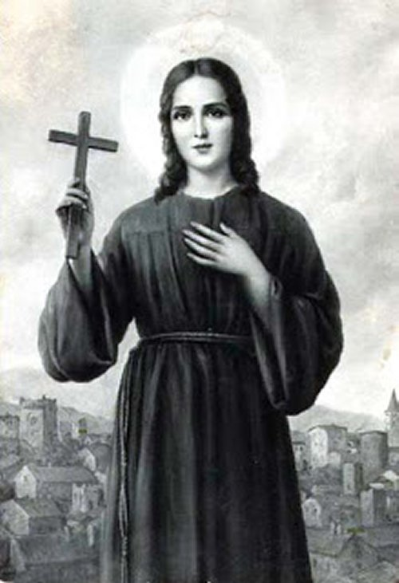

"SANTA ROSA DE
VITERBO"

"A SANTIDADE È UMA GRAÇA DO DIVINO ESPÍRITO SANTO, QUE TRANSFORMA OS CORAÇÕES, INFUNDINDO PLENA FIDELIDADE A DEUS E UM IMENSO AMOR A PAZ."
=ÍNDICE=
- NASCEU COM UM IDEAL
- COM INSPIRAÇÃO DIVINA
- CUMPRIU A ORDEM DA MÃE
- FOTOS + CONVITE + E-MAIL


 -
-